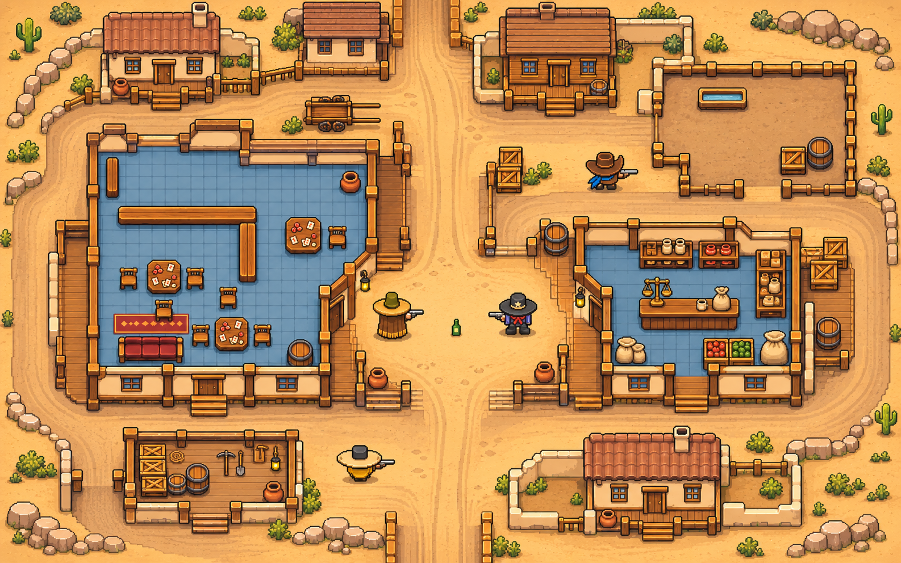

Voir la suite des itérations du 25 novembre
Tequila Kill · Concepts du 24 novembre 2026
Référence retenue : dégradés doux, formes lisibles et personnages posés au sol. Ces images sont des maquettes artistiques, pas des captures du moteur. Leurs prompts et les variantes sont conservés avec les PNG.
Inventaire et empreintes des fichiers · Préférences du producteur
Arroyo Seco · Village western avec quatre silhouettes
Première proposition après entretien : agrandissement progressif, rue principale et place, maisons fermées, limites naturelles et contournements. Deux silhouettes supplémentaires provisoires. À examiner.

Ouvrir le PNG · Prompt exact et références